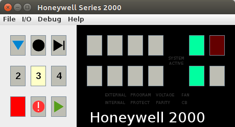

Virtual Honeywell computer based on Series 2000 Hardware.
Implements a "fully loaded" system: 512K memory, All instructions including Scientific Unit, Memory protection and relocation. Based on Honeywell Series 2000 Programmer's Reference Manual (There is mention of 1M memory in this document, but nothing else seems to support more than 19 address bits - particularly address modifiers in 4-character addressing mode).
 Documentation states that a Type 220-3/6/8 console is required on all Series 2000 Systems, which likely means that a full-feature front panel shown above never existed. If the java program is started with a "220-3" on the commandline, then a minimal control panel will be used - similar to the one provided on the 220-3 console (shown right).
Here is a short video of it running MACHIN, the Pi computation program (under monitor). YouTube Video
Sample programs include "monitor.ezc", a simple monitor program that will run a job in protected/relocated mode and service interrupts for privileged op codes (and allow PDT/PCB), and abort on address violations or disallowed op-codes. It is interactive on the console. Two commands are recognized, "L" to list currently queued job (if any), and "R" to run current job. When job finishes (executes a halt instruction) the monitor prints information including the total amount of time used based on the ATR register (and overflows), assuming 2 microseconds per count.
Notes on Peripheral Read/Write Channels
Easycoder Assembler Implementation
FORTRAN IV Compiler Implementation
MOD1 MSR (Mass Storage Resident) Operating System Implementation
Current (at least partially) implemented peripherals:
The simulation has two implied modes of operation. The default (without monitor) allows a program to be assembled (File->Assemble) into memory directly and can be executed by pressing the "Run" button (i.e. SR is setup by assembler). The second mode is entered by selecting File->Monitor and choosing "monitor.ezc" (or equivalent), then pressing Run. Note, the file browse window has a checkbox for "Listing" which enables generation of an assembler listing.
There are still some complications with monitor mode, it may be necessary to press Initialize when switching between modes.
The built-in assembler is basic but functional. Not all Easycoder directives are supported, but there should be enough to get by. All main op-codes are supported, but non of the "pseudo" op-codes (e.g. implied variants).
The sample programs include "machin.ezc", which is the program from The Honey Pi Project, and "mcetests.ezc" which is a test set for the MCE instruction and also uses the line printer.
There are a lot of unanswered questions that may lead to unexpected behavior for someone familiar with the original hardware. If you have information that can help me improve the authenticity of this project, please share.
Details of the BOOTSTRAP button and console 'B' command are described here. There is a mag tape bootstrap loader program that the assembler can use to create a mag tape image of a program, which can be run via BOOTSTRAP. When selecting a file to assemble, check the "Tape Image" box. This will result in a ".mti" file being created, complete with loader, header, and punctuation repair blocks. Note, programs used with this loader must be ORG'ed (at least) at 1340 (decimal). The program "mcetests.ezc" can be assembled with this option, and yields an image that can be mounted on Tape Drive Unit 000 and used with the BOOTSTRAP function. Use a boot address of 0.
Downloads are available at sebhc.durgadas.com/hw2000
Contact: durgadas311@gmail